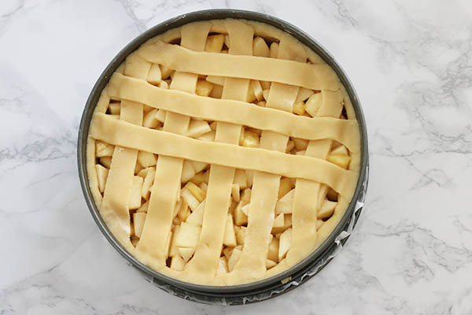

Appeltaart met ananas en gember
Vandaag ben ik jarig! En daar hoort natuurlijk taart bij.
Appeltaart is een van mijn favorieten en met de Hero gemberjam en stukjes ananas maakt dit het feestje compleet.
Die combi is zo lekker fris en zoet tegelijk!
Ik moest even nadenken hoe oud ik ben want ondanks dat ik 32 ben geworden voel ik me nog altijd 25. Maar dat is de leeftijd dat ik LeukeRecepten.nl opstartte en in de tussentijd is er heel veel gebeurd zoals je ziet. Maar 32 is een mooie leeftijd vind ik. Je bent volwassen maar je kunt je soms nog prima als twintiger (of tiener) gedragen haha.
Maar terug naar de taart! Ik kwam er dus achter dat ik geen echte traditionele oma’s appeltaart op mijn site had staan. En dat werd tijd. Het grappige is dat mijn eigen oma nooit appeltaart maakte dus zo kan ik het niet noemen, maar ze heeft wel altijd ananasvlaai op haar verjaardag dus stiekem toch een beetje geïnspireerd hierop.

De stukjes ananas geven de taart een bijzondere en tropische smaak. En door gemberjam te gebruiken krijgt het gebak een hele frisse smaak en wat extra pit. Super lekker! En waar koop je die gemberjam? In de meeste supermarkten is de gemberjam van Hero te koop, deze is heerlijk fris van smaak en bevat natuurlijke ingrediënten. Ken je deze nog niet dan zou ik hem zeker een keertje proberen! Behalve in de appeltaart is hij ook heerlijk op bijvoorbeeld brood, in de yoghurt, in dressings en marinades of ander gebak.
Recept appeltaart met ananas en gember
GEBAK - 40 MIN + 60 OVENTIJD - 12 PERSONEN
Ingrediënten:
- 220 gram boter (koud) + om in te vetten
- 400 gram zelfrijzend bakmeel
- 1 ei
- 180 gram witte basterdsuiker
- 1 zakje vanillesuiker (8 gr)
- Snufje zout
- 1 eetlepel Hero gemberjam
Vulling:
- 4 middelgrote appels (1 kilo)
- 250 gr ananas
- 25 gram suiker
- Snuf kaneel
- 3 eetlepels bloem
- 1 eetlepel Hero gemberjam
- 2 eetlepels paneermeel
- 1 eetlepel citroensap
Materialen:
- Springvorm a 24 cm
- Bakpapier
- Deegroller
Bereidingswijze
Is het erg plakkerig, voeg dan nog een beetje bakmeel toe en is het erg droog nog een beetje boter of ei. Wikkel het deeg in folie en leg zo lang in de koelkast.
Schil ondertussen de appels en snijd samen met de ananas in blokjes. Meng het fruit in een kom met 25 gr suiker, kaneel, 1 eetlepel gemberjam, 3 eetlepels bloem en citroensap.
Leg het bakpapier op de bodem van de springvorm en doe de rand hierop en klik vast. Verwijder het overige papier aan de zijkanten. Vet de hele springvorm in met boter.
Bekleed de vorm hiermee. Gaat dit niet zo handig? Geen probleem, druk met je vingers het deeg uit in de vorm tot de hele bodem en de zijkanten bedekt zijn met een laagje deeg. Verdeel het paneermeel over de bodem.

Druk het mengsel in een cakevorm en bak deze ongeveer 1 uur in de oven. Verdeel het appelmengsel over de bodem en druk ietsjes aan. Rol het overige deeg uit en snijd hier repen van en leg deze kruislings over de taart en druk de uiteinden vast aan de rand van de taart.Bestrijk de bovenkant vervolgens met het overgebleven ei.
Bak de appeltaart in ongeveer 60 minuten gaar en mooi goudbruin. Bestrijk de bovenzijde vlak nadat hij uit de oven komt met gemberjam.
Laat hem grotendeels afkoelen voordat je hem uit de vorm haalt. Lekker met een toef slagroom.